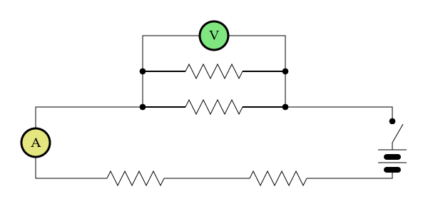

Introduction¶
This tutorial is intended to help you get up and running working with Kiva. Kiva is a backend agnostic 2D vector drawing interface. In other words, it is a Python interface layer which sits on top of many different backends that provide 2D vector drawing functionality such as Quartz, Cairo, etc. Many of the concepts that will be covered here are generalizations of the ideas that govern the underlying backends. As such, new Kiva users may find it useful for their general understanding of what Kiva is all about to go through any of the numerous other tutorials and documentation out there for specific backends. Here are some we recommend:
Before we dive in, we suggest at least skimming the Kiva documentation before going through the tutorial so you are familiar with the relevant terms and concepts.
Circuit Diagram Example¶
In this tutorial, we will go through the process of drawing the basic circuit diagram shown below step by step with Kiva. As mentioned, Kiva supports a variety of different backends, but for this tutorial we will work with the default agg backend.
{kind=link}
Starting from the beginning, we will need a GraphicsContext so we import it from our desired backend and instantiate it. Disregard the other imports for now, they will come into play later in the tutorial.
from math import tau
import numpy as np
from kiva.api import CAP_ROUND, CIRCLE_MARKER, Font, STROKE
from kiva.image import GraphicsContext, CompiledPath
gc = GraphicsContext((600, 300))
Now we are ready to use it to start drawing - simple as that. Let’s start with
just drawing the wires. Given that they are rectangles, this can be done
quite easily using the graphics context’s rect() method.
# step 1) draw wires
gc.rect(50, 50, 500, 100)
gc.rect(200, 150, 200, 50)
gc.rect(200, 200, 200, 50)
gc.stroke_path()
{kind=link}
That was easy. Now, let’s draw the dots indicating wire connections. To do
this, we can use the optimized draw_marker_at_points() method.
Note
draw_marker_at_points() is currently only implemented by the
kiva.agg backend which may soon be deprecated. We can guard against this
to make our code backend agnostic, but for the purposes of keeping the
tutorial simple we do not do that here. See the
advanced version of the tutorial for
how to do so.
In this case, with only 5 dots to draw, the speed up is likely negligible.
However, in scenarios where you need to draw many markers this method can
provide a significant boost as opposed to just using a for loop (on the order
of hundreds or more). Here we simply define the points of the markers and call
the method with the points, a marker size, and a marker (the CIRCLE_MARKER
we imported from kiva.api) passed as arguments.
# step 2) draw dots for wire connections
points = np.array([
[200., 150.],
[200., 200.],
[400., 150.],
[400., 200.],
[550., 130.]
])
gc.draw_marker_at_points(points, 4.0, CIRCLE_MARKER)
{kind=link}
Next, we will draw the Ammeter and Voltmeter symbols. To do this, we are going to want to modify the graphics context’s state to transform our coordinate system to draw in the correct locations, and also to change things like the fill color, line width, etc. However, we only want these state modifications to apply to this specific part of the drawing. Luckily, to manage this, the graphics context object can actually be used as a python context manager. This allows us to meddle with state temporarily, do some drawing, and then have the state reset to where it was once we are finished.
In the following code, we instantiate a Font object and set it to be
the graphics context’s font. We do this first as it is the only font we intend
to use, so it can be a persistent modification to the graphics state. Then, we
use two with blocks to temporarily modify state. In each, we move to the
desired location to draw the symbol, change fill color, adjust the line width,
define a circular path with the arc() method, and then finally draw
our path. Once the path is drawn, we draw the text inside. To do this we first
set the fill color back to black. Next, we ensure the font is centered in the
circular path. We do this be calling get_text_extent() to determine
the width and height that the text takes up. When we call
show_text_at_point(), the arguments specifying the point to draw at
represent the lower left corner of the resulting text. Thus, since the origin
of our coordinate system is currently at the center of the circle, in order for
the text to be centered we need to draw the text at (-w/2, -h/2).
# step 3) Ammeter and Voltmeter
font = Font('Times New Roman', size=20)
gc.set_font(font)
with gc: # Voltmeter
gc.translate_ctm(50, 100)
gc.set_fill_color((.9, .9, 0.5, 1.0))
gc.set_line_width(3)
gc.arc(0, 0, 20, 0.0, tau)
gc.draw_path()
gc.set_fill_color((0., 0., 0., 1.0))
x, y, w, h = gc.get_text_extent('A')
gc.show_text_at_point('A', -w/2, -h/2)
with gc: # Ammeter
gc.translate_ctm(300, 250)
gc.set_fill_color((0.5, .9, 0.5, 1.0))
gc.set_line_width(3)
gc.arc(0, 0, 20, 0.0, tau)
gc.draw_path()
gc.set_fill_color((0., 0., 0., 1.0))
x, y, w, h = gc.get_text_extent('V')
gc.show_text_at_point('V', -w/2, -h/2)
{kind=link}
As you may have noticed, most of the code for drawing the Ammeter and the
Voltmeter was effectively the same. Sometimes it is useful to work with an
independent path instance as opposed to specifically messing with the current
path of the graphics context. This brings us to the notion of CompiledPaths,
which we will now use to draw the resistors. As you can see the path for each
resistor will be exactly the same. Rather than moving our coordinate system
around to each location and redrawing the same path at each location, we will
instead define the path using a CompiledPath and draw it at each of
the various desired locations using the draw_path_at_points() method.
To do this we instantiate a CompiledPath, and then define our path
just as we would with the graphics context’s current path. The interface uses
the same Path functions. Finally, we can simply call
draw_path_at_points() passing in the locations where we want to draw
the path, our compiled path, and the drawing mode.
#step 4) resistors
resistor_path = CompiledPath()
resistor_path.move_to(0,0)
resistor_path_points = [(i*10+5, 10*(-1)**i) for i in range(8)]
for x, y in resistor_path_points:
resistor_path.line_to(x,y)
resistor_path.line_to(80, 0)
gc.draw_path_at_points(resistor_locations, resistor_path, STROKE)
If you run just this code, you will notice that things don’t look quite right, as the original lines for the wires still show underneath our resistors. We can get rid of these by drawing white lines over the relevant portions of the wire before we call the above code. Note that this is not the most performant approach we could take especially in the context of an interactive application. In general we want to strive to touch each pixel as few times as necessary. However, in this case to keep the tutorial simple, we can run the following code before drawing the resistors.
# step 5) clear some space for the resistors
clear_resistor_path = CompiledPath()
clear_resistor_path.move_to(0,0)
clear_resistor_path.line_to(80, 0)
resistor_locations = [
(150, 50),
(350, 50),
(260, 150),
(260, 200)
]
with gc:
gc.set_stroke_color((1., 1., 1., 1.))
gc.set_line_width(2)
gc.draw_path_at_points(resistor_locations, clear_resistor_path, STROKE)
{kind=link}
Now, for the switch. Just like above, we are going to want to “erase” the previously drawn wire. Then, for the actual switch, we want to effectively just rotate that segment of wire outwards. To do this we tranform our coordinates so that we can simply draw a line along the x axis of the same length as the gap we just created. Thus, we translate to the lower edge of the switch, and rotate our axis to the desired angle. Upon exit from the context manager, the coordinate system is reverted back to as it was before.
# step 6) switch
# white out the wire
with gc:
gc.translate_ctm(550, 130)
# wire connection dot markers have size 4 and we don't want to clear that
gc.move_to(0, -4)
gc.set_stroke_color((1., 1., 1., 1.))
gc.set_line_width(2)
gc.line_to(0, -30)
gc.stroke_path()
# draw the switch
with gc:
# move to the connected side of the switch and rotate coordinates
# to the angle we want to draw the switch
gc.translate_ctm(550, 100)
gc.rotate_ctm(tau/6)
gc.move_to(0, 0)
gc.line_to(30, 0)
gc.stroke_path()
{kind=link}
We will leave the drawing of the battery as an exercise for the reader, but the full code for the example is available here.
This tutorial was intended as a ramp up for drawing with Kiva. Many of the approaches taken were chosen with a focus on teaching, not writing optimal code. In pactice, you probably would not want to implement drawing in this way because it is not as performant as it could be. For example, drawings lines and then “erasing” them by drawing a white line on top. Now that you better understand the basics of what Kiva drawing is all about, please refer to the advanced version of the tutorial to see what a more “production” level version of code for this drawing might look like.